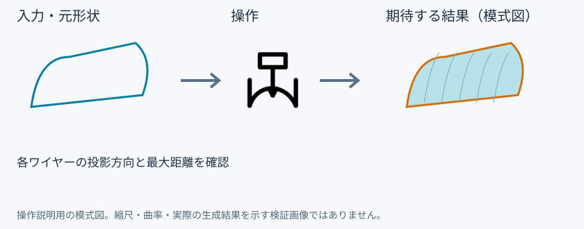

曲面へ投影
具体例: 半径2mmのライトを車体の曲面へ投影する

準備
曲面と、その正面側に半径2mmの円を描く
操作手順
- 面へ投影を選ぶ
- 元ワイヤー欄に円を追加する
- 投影先欄に面またはフェイスを追加する
- 方向とワイヤーの残し方を決めてプレビューし、確定する
設定: 各ワイヤーの投影方向と最大距離を確認
結果を確認
曲面上の閉じた輪郭を作る。面の境界で分かれても接続を確認する。
取消・やり直し
ダイアログの取消、またはペインの取消を使います。即時操作には未確定段階がありません。 確定済みの文書変更はCtrl+Z、やり直しはCtrl+Yです。保存・書出し済みのファイルはUndoの対象ではありません。
進めない場合
元ワイヤーと投影先の面を、道具を開始してから指定できます。
対象欄と3Dの強調を照合し、必要な線・面・部品を各役割へ指定します。処理中は計算表示を確認し、取消が可能な処理は取消を使います。
Windows版の操作画面